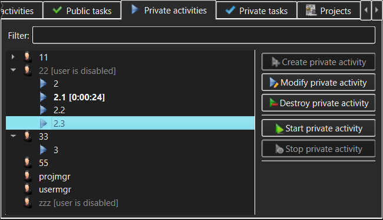

Private Activities view
The Private Activities view allows management of Private Activities (subject to access
permissions granted after login). These are Activities available to the specific
User who
can login to a TimeTracker3 workspace, with each User having their own set of
configured Private Activities.

The controls in the Private Activities view allow the user to access:
- Private activities list - this displays the list of
available Private Activities on a per-User basis. Normally only Private Activities
of the User itself will be visible
to that user; however, if the User is configured to only be
allowed to work on specific Private Activities, then such user will only be
able to see these configured Private Activities but not the other existing
Private Activities. NOTE that someone logging in with an Administrator
capability will see all Users and all their Private Activities.
- Filter - type anything here to narrow the set of
displayed Private Activities or to quickly find a specific Private Activity. The
filter match can appear anywhere within the Public Activity name.
- Create private activity - use this button to create a new
Private Activity.
This will only be permitted to someone with Administrator or Manage Private
Activities
capability and will be disallowed in a read-only workspace.
- View/Modify private activity - use this button to view or modify
the Private Activity currently selected in the Private Activities list. The meaning of this
button (view or modify) will be determined by whether the current user has
logged in with Administrator or Manage Private Activities capability and whether or not
the workspace is read-only.
- Destroy private activity - use this button to permanently destroy
the Private Activity currently selected in the Private Activities list. You will be asked to
confirm the destruction, as this is a dangerous operation in that it also
destroys all Work items and Events logged against that Private Activity. The destroy confirmation
dialog that pops up will show just how much the recorded work history will be
impacted.
- Start private activity - use this button to start
recording the currently selected Private Activity. If any Activity or Task
was already being recorded, its recording is automatically stopped and the
corresponding Work item is logged into the workspace.
- Stop private activity - use this button to stop
recording the Private Activity that is currently being recorded. This button
will only be available when such a Private Activity is selected in the
Private
Activities list.
While a Private Activity is being recorded, the corresponding item in the
Private Activities list will be highlighted and its recorded duration will be
displayed alongside the item and updated live.
Note that only one activity can be recorded at any given time. Therefore, if
e.g. a Public Activity or a Private Task is being recorded, starting a Private
Activity will stop and log the previously active recording, logging the
corresponding Work item.
As well as action buttons, the Private Activities list allows invoking the same
actions (create, modify, destroy, start or stop Private Activities) via the context menus that pop
up when the Private Activities list items are right-clicked.
See also:
Create/Modify Private Activity dialog,
Destroy
Private Activity dialog